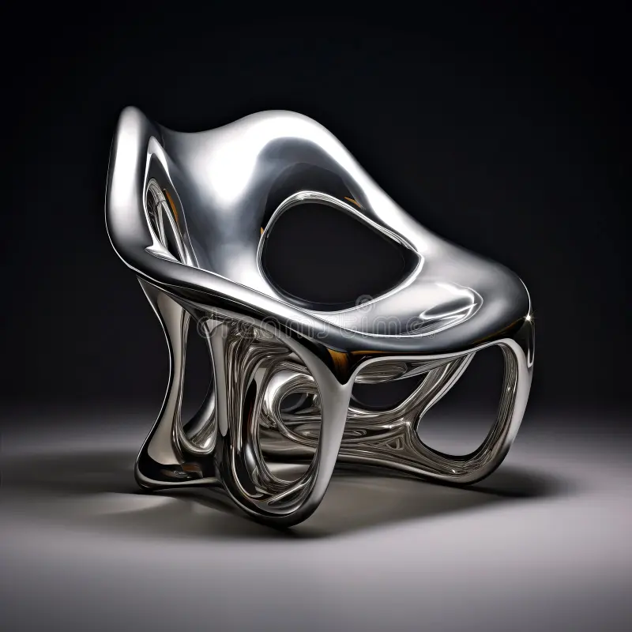
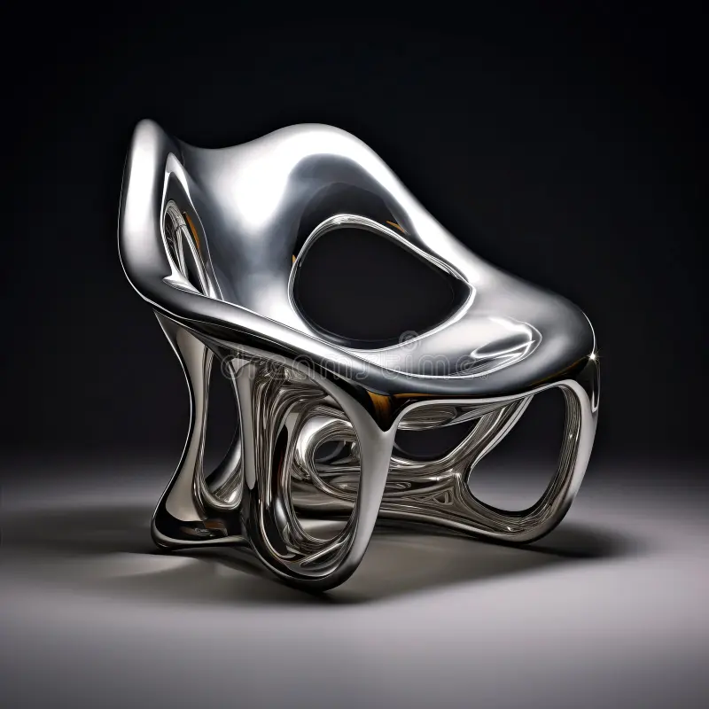

Jacques Jarrige
Lacquered Armchair
Description : Ce fauteuil sculptural est une manifestation saisissante du design biomorphique futuriste, repoussant les limites entre le mobilier fonctionnel et l'objet d'art numérique. Il est conçu pour rompre radicalement avec la statique des structures traditionnelles, embrassant une esthétique de la fluidité absolue. Sa forme complexe et déliée évoque du métal liquide en fusion figé instantanément dans un mouvement perpétuel, créant un réseau organique d'arches et d'ouvertures qui semble défier la gravité et la matière.
Structure : La pièce apparaît comme une coque monobloc, suggérant l'utilisation de techniques de fabrication avancées (comme l'impression 3D métallique ou le moulage de précision d'aluminium/acier inoxydable). L'ensemble est magnifié par une finition poli-miroir ultra-réfléchissante qui dématérialise l'objet, le faisant disparaître dans les reflets de son environnement tout en soulignant la tension de ses courbes liquides et le jeu fascinant entre les pleins et les vides.
Dimensions : H. (Hauteur totale) : 78 cm, L. (Largeur) : 85 cm, P. (Profondeur) : 88 cm.